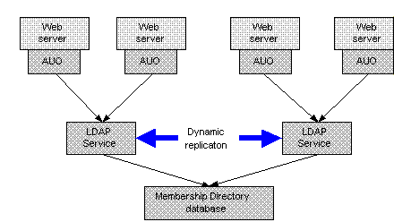

|
| ||
|
| ||
Anthony Chavez
Microsoft Corporation
April 27, 1998
Note In addition to this article, be sure to read Active User Object (AUO) for Session State Not Working with Cookie Authentication,"published in March 1999.
Contents
Introduction
Using the Session Object to Store
Session State Data
Using the Membership Directory to Store
Session State Data
Configuring AUO
Accessing Session State Data Using
AUO
Differences Between IIS Sessions and
Membership Directory Session Objects
Load and Scaling Issues
Return to Site Server 3.0 Overview page
This article discusses how the Site Server Membership Directory and Active User Object (AUO) can be used to support session state data in Active Server Pages (ASP)-based Web applications.
This approach has the benefit that it will work across Web farms. In addition, session state data can be stored in the RAM-based dynamic portion of the Membership Directory, yielding higher performance than storing the session state data in a static database. Furthermore, you can configure AUO to provide access to session state data, resulting in a single, simple interface to all user data.
Both the Membership Directory and AUO are available as part of Microsoft Site Server version 3.0.
Note This article assumes the reader is familiar with the Membership Directory and AUO, as well as Microsoft Internet Information Server (IIS) and ASP.
Session state data is information about a user that you want to track during the user's visit to your Web site. Some examples of session state data are:
Session state is inherently temporary; if the user does not request another page within a certain time (for example, 20 minutes), the session expires and all data associated with it is lost. The next time the user requests a page from the site, a new session begins.
IIS and ASP technology provide script authors an easy way
to manage session state data, using the built-in Session
object (see the IIS documentation, which you can download
from
http://microsoft.com/ntserver/web/default.asp  ). When a
user first requests an ASP page within an application, IIS
automatically creates a new Session object for that user in
the Web server. The script author uses this object to store
and retrieve arbitrary user properties. The author does not
have to deal with creating the Session object, assigning a
session cookie to the user, or retrieving the Session
object for the current user; this is handled behind the
scenes by IIS. To store a variable in the Session object,
you simply assign it to a named entry.
). When a
user first requests an ASP page within an application, IIS
automatically creates a new Session object for that user in
the Web server. The script author uses this object to store
and retrieve arbitrary user properties. The author does not
have to deal with creating the Session object, assigning a
session cookie to the user, or retrieving the Session
object for the current user; this is handled behind the
scenes by IIS. To store a variable in the Session object,
you simply assign it to a named entry.
For example:
Session("visitedPromoPage") = True
To retrieve a session variable, the script author just accesses the entry where it is stored. For example:
<% if Session("visitedPromoPage") = False then %>
<a href="promotionalpage"> CLICK HERE FOR COOL STUFF </a>
<% end if %>
Using IIS Session objects works great but there are limitations; in particular, they are difficult to use with Web farms. The Session object is stored in RAM on the computer where it was originally created. If on subsequent requests the user receives a Web page from a different Web server computer, a new Session object will be created there, with no relation to the original Session object, which is clearly not the desired behavior. There are various workarounds to this problem, as well as other solutions. Full discussion of these approaches and their tradeoffs is outside the scope of this paper; see the paper Managing Session State in a Web Farm (consult the Microsoft BackOffice Web site).
Note One of the approaches described in this paper is to use the Microsoft Personalization System (MPS). This product has been succeeded by the Personalization system in Site Server 3.0. If you wish to use a static store approach to storing session state, it is strongly recommended that you use Site Server 3.0.
One approach (not mentioned in the Web Farm paper) that you should consider is storing session state data in the Site Server Membership Directory and using AUO to access it from your ASP pages. This method is discussed in the remainder of this document.
The Membership Directory can store user and application data for intranet and Internet Web sites that have been built on IIS and ASP. Data stored in the Membership Directory can be either static or dynamic. For example, user accounts and personalization profiles are stored as static data. On the other hand, the current IP address of the user could be stored as dynamic data, because it is transient and will change depending on where the user logs in. Access to data in the Membership Directory is supported through the Active Directory Service Interface (ADSI). In addition, one can access the Membership Directory over TCP/IP using the standard LDAP version 3 protocol.
The Dynamic Directory area of the Membership Directory is a natural place to house session state data. As described in the following section, you can configure AUO to automatically create a dynamic object in the Membership Directory for each user visiting the site. Attributes on this object are the user's session attributes. Dynamic objects in the Membership Directory have a time-to-live (TTL), which is specified when the object is created. Clients can refresh a dynamic object, resetting its TTL; once the TTL has expired, the object is automatically deleted. This corresponds precisely to the notion of a session. The TTL is the session length; when the TTL (and the Session object itself) expires, the session is over. Whenever the user visits a page on the site, the dynamic object is refreshed and the session is renewed. When the user goes for a long period without accessing a page on the site, the Session object expires.
The main benefit of this approach is the ability to work in a Web farm environment where users may be bounced from Web server to Web server as they traverse the site, because the session state data is stored in the common Membership Directory. Another benefit is fault tolerance. Using the IIS built-in Session object, if the Web server containing a user's session data crashes, that session data is lost. Using the Membership Directory to store session data, if a Web server goes down, the user's session state data is preserved. When the load-balancing mechanism redirects the user to a working Web server, pages on that server will be able to retrieve the user's session data from the Membership Directory. Additional fault tolerance can be added by using the dynamic data replication feature of the Membership Directory. Multiple Lightweight Directory Access Protocol (LDAP) Services (on separate computers) that are part of the same Membership Directory can be configured to replicate dynamic data amongst each other. If one of the LDAP Services crashes, the others take over responsibility for managing its dynamic data.
One of the key features of Site Server is Active User Object (AUO). AUO provides script authors with seamless access to user attributes stored in a variety of stores. AUO is based on a provider model; any store accessible through ADSI can be an AUO provider. To access session state data using AUO, you need to configure a provider to access the Dynamic Directory portion of the Membership Directory.
First, make sure you have installed a Membership Server with AUO on your Web server computer and mapped the appropriate Web site to it. The Membership Directory can use either Membership Authentication mode or Microsoft Windows NT Authentication mode.
Second, you need to choose or create a class of object for the user's session state data. This can be any class that the Membership Directory supports. You can use an existing class, such as the Member class, or you can define a new class with the attributes that you want as session properties. One of the Site Server samples (which you can download from the Microsoft Web site) is an example of how to use AUO with session state data. The sample is an ASP page designed to work with session state data. If you want to try this ASP page, you must configure a new container, new class, and attributes as shown in the following procedure. Use the Membership Directory Manager (MDM) (from the Microsoft Management Console [MMC]) to add containers, classes, and attributes as needed.
To configure your Site Server installation to use the session state data sample:
1. Under the Membership Directory root node, create a container named ou=SessionStateData.
2. Create an attribute in the schema with the following attributes:
cn: HitCount Type: Integer
3. Create a class named SessionState with the following attributes:
Must-have: cn and objectClass*. May-have: GUID and HitCount**. Parent class: organizationalUnit RDNAttribute: cn.
*If you are using the Membership Directory Manager (from MMC) to create this class, you will not be able to explicity add the objectClass attribute; this is done for you automatically.
**GUID is a required attribute of your SessionState class.
4. Use Microsoft Site Server Service Admin (MMC) to create a secondary AUO provider with the alias SessionState and give it the following properties:
ADS path: computename:LDAPport/o=directoryname/ou=SessionStateData Schema path: computename:LDAPport/o=directoryname/ou=Admin/cn=Schema/cn=SessionState
On any ASP page where you want to get or set session state data, you need to create an AUO instance for the current user:
Set user = Server.CreateObject("Membership.UserObjects")
This line sets the user variable to the AUO of the user currently accessing the page. We will use this variable in the example code later in this topic.
For the static AUO providers, you are now ready to access user properties. For the dynamic provider you have configured for session state, you need to do a little extra work. Because the Session object is dynamic, it may not currently exist. Therefore, you need to add code that checks if the user's Session object exists, and creates it if the object does not exist. The code also needs to set the object's TTL to the desired session length. The following code snippet shows how to do this (it assumes the AUO session state provider is named SessionState, and the class for Session objects is SessionState):
If Not IsArray(user("SessionState").objectClass) Then
' User doesn't yet exist, so make sure it's dynamic
user("SessionState").objectClass = Array("SessionState",
"dynamicObject")
end if
' set the time-to-live to the desired session length.
' This is specified in seconds.
User("SessionState").entryTTL = 600 ' set to 10 minutes
User("SessionState").SetInfo 'must call this immediately after setting entryTTL
Note It is necessary to always call SetInfo() immediately after setting the entryTTL attribute, and before setting any other attribute on the dynamic AUO provider.
You may want to refresh the user's Session object whenever they visit any page in the site, whether or not that page actually uses session state data. To keep from having redundant code everywhere, we recommend putting the previous code into an .inc file, and including this file on every ASP page.
Now you can access user session properties, very much like you would using the built-in Session object. Two examples follow, which show how you would use the Session object and how you would use AUO and the Membership Directory.
To set a user session property:
Session("quoteTotal") = 1
Session("currentPage") = Request("SCRIPT_NAME")
User("ILSsession").quoteTotal= 1
User("ILSsession").currentPage = Request("SCRIPT_NAME")
To retrieve a user session property:
userQuoteTotal = Session("quoteTotal")
userQuoteTotal = User("ILSsession").quoteTotal
Finally, at the end of every page on which you have set any session properties using AUO with the Membership Directory, be sure to call the SetInfo() method on your dynamic provider:
User("ILSsession").SetInfo
Note It is necessary to always call SetInfo() immediately after setting the entryTTL attribute, and before setting any other attribute on the dynamic AUO provider.
As you can see from the previous examples, using AUO for session state data is similar to using the built-in Session object. However, there are three significant differences.
With the built-in Session object, you can define new properties simply by specifying a new entry name. For example, suppose you want to let each user enter a friendly name to be used in their session. You might do something like this:
Session("userFriendlyName") = Request.Form("FriendlyName")
Using AUO with the Membership Directory, it is slightly more work. Before you can use userFriendlyName as a session property, you need to first define a new attribute in the Membership Directory schema called userFriendlyName, and then add this attribute to the class being used for session state data. To do this, use MDM. Once this is done, you can use the following code:
User("ILSsession").userFriendlyName = Request.Form("FriendlyName")
One of the biggest differences between using the IIS Session object and storing session state data in the Membership Directory is that you can search for objects in the Membership Directory. For example, you could generate a list of all the users currently viewing a given Web page. Assuming that the name of the user's current page is stored in the currentPage property as shown previously, the following code will print a list of all users viewing the current page. (Note that this code utilizes the Active Data Object [ADO] to search the Membership Directory.)
Using the built-in Session object, you can store any type of variable in a session entry, including String, Integer, and Object types. For example, suppose your ASP page creates a COM object that stores a list of the stocks the user has requested quotes for during the current session. Using the Session object, you can store this COM object for subsequent access in other pages.
Set userQuotes= CreateObject("QuoteRequests") ' create COM object
userQuotes.addQuote("msft") ' call methods on object
userQuotes.addQuote("ibm")
Session("Quotes") = userQuotes ' store the object
If you are using the Membership Directory for session state data, this is not quite as easy. The types of values you can store for user attributes depends on the syntax of these attributes, as defined in the Membership Directory schema. The Membership Directory supports five attribute syntaxes: UnicodeString, Integer, Date/Time, Binary, and DistinguishedName. (See the Operations Guide in the Personalization & Membership [P&M] section of the Site Server, Commerce Edition documentation for explanation of these syntaxes.) Typically, your session attributes will have UnicodeString or Integer syntax.
Note: The following discussion assumes you are familiar with writing and extending COM objects. If you are not, ignore this section.
To store a COM object as a session attribute in the Membership Directory, it needs to be able to persist itself into a format suitable for storing as an attribute value in the Membership Directory, such as a String or Binary blob.
Taking the previous example, if you wanted to persist the QuoteRequests COM object in the Membership Directory, you could add a Persist() and Unpersist() method. The Persist() method would return a string that represents the current state of the object. The Unpersist() method would take as an argument a string generated by calling Persist() and restore the object back to the state represented by the string. This is a standard technique used to persist objects to external stores. Your COM classes may already have methods that perform such functions.
Once you have Persist() and Unpersist() methods, you can easily store a QuoteRequests object as a session attribute in the Membership Directory. Here is code that duplicates the previous example.
Note Assume that an attribute named Quotes with UnicodeString syntax has been defined in the Membership Directory schema, and added to the SessionState class.)
Set userQuotes = CreateObject("QuoteRequests") ' create COM object
userQuotes.addQuote("msft") ' call methods on object
userQuotes.addQuote("ibm")
'additional operations on object...
User("ILSsession").quotes = userQuotes.Persist()
Now suppose a different ASP page needs to get the user's current QuoteRequests object. The following code illustrates how to do this:
Set userQuotes= CreateObject("QuoteRequests") ' create COM object
userQuotes.Unpersist( User("ILSsession").quotes )
' now you can perform operations on the UserPurchases object
userQuotes.addQuote("nscp")
userQuotes.listQuotes()
....
When designing your site, you need to take into account issues of load and scaling. Your configuration needs to be such that the anticipated peak load on any one component will not overtax it. When using the Membership Directory to store session state data, the load levels of the LDAP Services will depend on a number of different factors, including:
It is recommended that you use a combination of empirical testing and analysis of existing and anticipated loads. For more guidance on configuring your site, consult the Microsoft BackOffice Web site for additional white papers and other information.
The basic approach for addressing session state load is to have multiple LDAP Services pointing to the same Membership Directory. The AUO instances associated with your Web servers should be balanced across these LDAP Services. You will most likely want to have multiple LDAP Services for other reasons as well; for example, to balance the load for authentication and personalization based on static attributes, fault tolerance, and so on.
Personalization & Membership (P&M) supports replication of dynamic data among LDAP Services that point to the same Membership Directory. Although a user may get bounced across Web servers through round-robining, all of the ASP pages on the Web servers will be able to access the user's session state data using AUO, so long as the AUO instances point to LDAP Services that access the same Membership Directory database. The following picture illustrates this:

Figure 1. ASP pages accessing session state data using AUO
Besides load, you should also consider the anticipated peak number of concurrent sessions. This number translates to the maximum number of dynamic objects that the LDAP Service must store at any single time. Based on this number, you need to appropriately configure the maximum number of dynamic objects that the LDAP Service allows. You can set this property using Microsoft Site Server Service Administration (MMC), or using the P&M Service Administration command-line interface.
Did you find this material useful? Gripes? Compliments? Suggestions for other articles? Write us!
© 1999 Microsoft Corporation. All rights reserved. Terms of use.